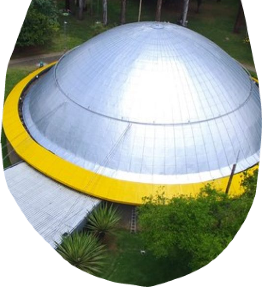

<div class="voc-sabia-polo-mooca">
    <div class="div">
      <div class="overlap">
        <div class="overlap-group">
          <div class="group">
            <div class="overlap-group-2">
              <div class="voc">VOCÊ</div>
              <div class="sabia">SABIA?</div>
            </div>
          </div>
          <div class="paragrafo-com-scroll">
            <p class="a-atual-identidade">
                Um reduto para o contato com a natureza, lazer e prática esportiva, localizado no coração da selva de pedras. 
                O Parque do Ibirapuera, que abriga obras e museus, 
                continua escrevendo novas histórias por meio das manifestações artísticas e culturais constantes.&nbsp;&nbsp;<br /><br />
                Em meio à selva de pedra da capital paulista, surge o Parque do Ibirapuera, um oásis verde que acalma a alma e revigora os sentidos. 
                Um refúgio para os amantes da natureza, um palco para a cultura e a arte, um espaço de lazer para toda a família.&nbsp;&nbsp;<br /><br />
                Um Museu ao Ar Livre: esculturas monumentais, como a "Obelisco" e "As Meninas do Brasil", se erguem como obras de arte a céu aberto, 
                convidando à admiração e à reflexão. 
                O Museu de Arte Moderna (MAM) e o Museu Afro Brasil são exemplos da rica oferta cultural do parque.&nbsp;&nbsp;<br /><br />
                Mais do que um parque, o Ibirapuera é um símbolo da cidade de São Paulo. 
                Um legado para as gerações futuras, um espaço que deve ser preservado e valorizado.
            </p>
          </div>
          
        </div>
        <div class="overlap-2">
           
        </div>
      </div>
      <div class="vector-wrapper"></div>
      
      
      
      <div class="img-wrapper"></div>
    </div>
</div>
